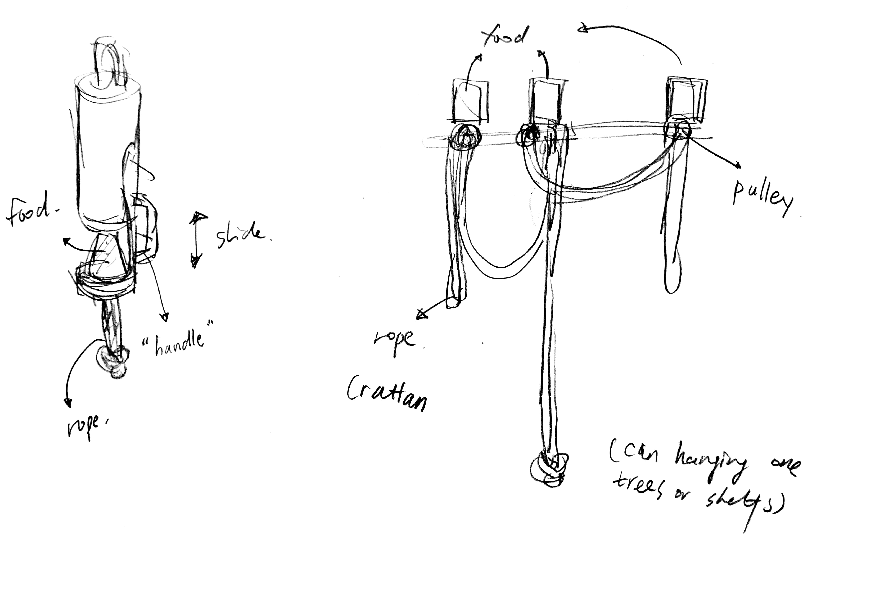

project 4
Elephants always interested me for their intelligence and their “emotional”. I was really impressed by the fact I heard that when a baby Elephant complain, the entire family will go over to touch and caress it to soothe it. However, as I known, the higher intelligence a specie have, the easier they may feel negative (like bored) when they are living in a zoo. Though many zoo pay a lot attention on animals welfare and try to create a nature environment for them, there are still many thing we can improve. Also it is fun and challenging to design some non-hands interaction. As a result, I choose elephants as my target user. and I as I know elephants are able to use (or even create) tools to reach some goals such as repelling insects, obtaining foods, scratching and so on. So my basic idea of enrichment facilities is to let them use their intelligence to interact with facilities and make them feel less bored or stressed.

Plan A
I food+entertain
It is a feeding set that require the elephant use different ways to open it and obtain the food. They can use their trunk to pull the handle like thing (mimic of tree branch) or pull the rope (mimic of rattan) or use another stick to hit the higher hanging feeding machine. This feeding set enable them to try to use their intelligence and some tools to have food (or treat?) It could also be a way to play.
Plan B
II “Tool kits” - still try to make this one more make sense
It is a tree branch liked tool kits with many different shape “tools” attached to it. They are designed to be access easily by elephants’ trunks. They are been able to use them to play or do other things.
Expert: DR. JOYCE POOLE